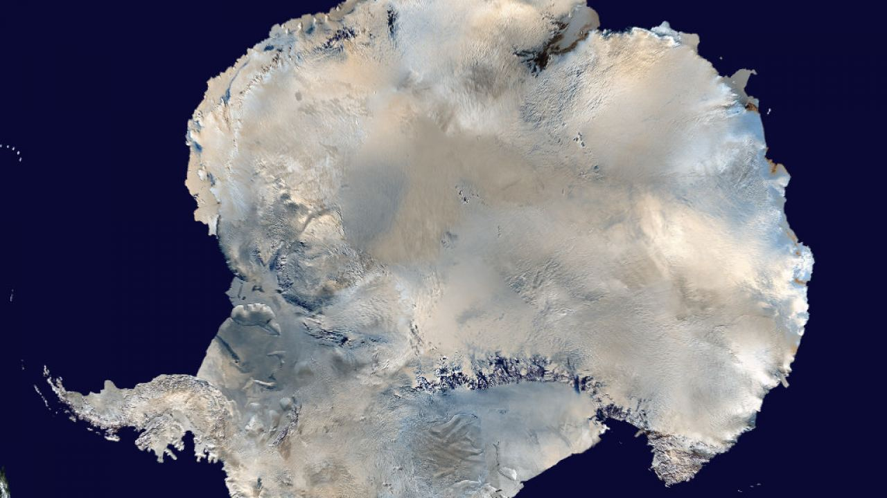
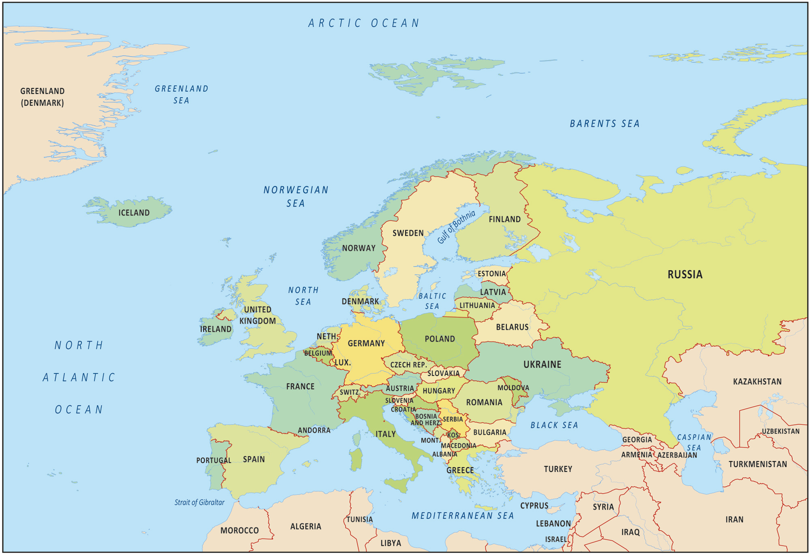
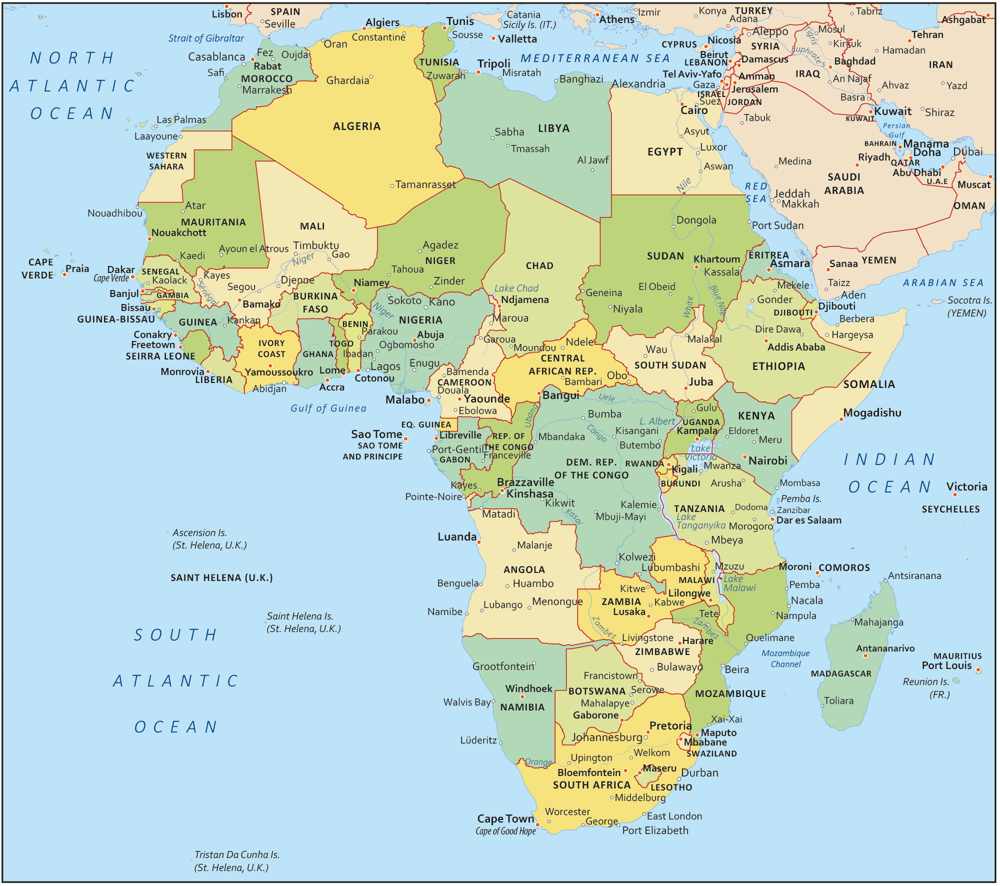
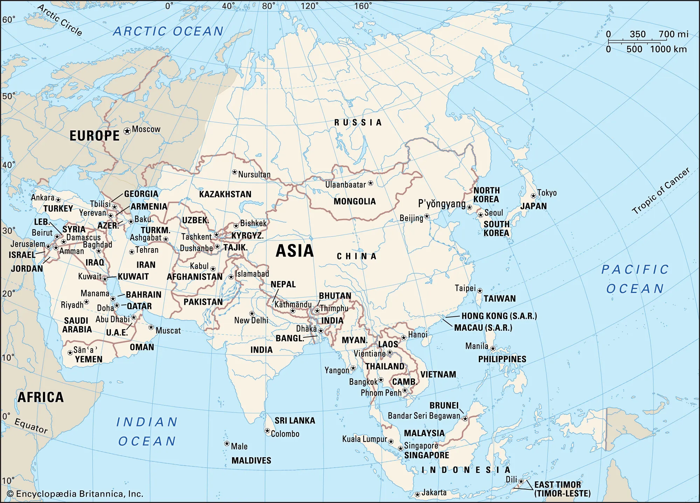

North America is a continent in the Northern and Western Hemispheres.
North America is bordered to the north by the Arctic Ocean, to the
east by the Atlantic Ocean, to the southeast by South America and
the Caribbean Sea, and to the west and south by the Pacific Ocean.
Area is about 9.45 million miles with a population of 579 million people.
This continent has so many people speaking languages throughout North America
like English, Spanish, French, Dutch, Danish and many others. The highest point
is Mount Denali.
North America occupies the northern portion of the landmass generally referred to as
the New World, the Western Hemisphere, or simply the Americas. Mainland North America
is shaped roughly like a triangle, with its base in the north and its apex in the south;
associated with the continent is Greenland, the largest island in the world, and such
offshore groups as the Arctic Archipelago, the West Indies, Haida Gwaii (formerly the
Queen Charlotte Islands), and the Aleutian Islands.
South America is a continent entirely in the Western Hemisphere and mostly in the
Southern Hemisphere, with a relatively small portion in the Northern Hemisphere
at the northern tip of the continent. It can also be described as the southern
subregion of a single continent called America.
South America has a total area of about 6,878,000 square miles (17,814,000 square km),
or roughly one-eighth of the land surface of Earth. Its greatest north-south extent is
about 4,700 miles, from Point Gallinas, Colombia, to Cape Horn, while its greatest east-west
extent is some 3,300 miles, from Cape Branco, Brazil, to Point Pariñas, Peru. At 22,831 feet
(6,959 metres) above sea level, Mount Aconcagua, in Argentina, near the border with Chile,
is not only the continent’s highest point but also the highest elevation in the Western Hemisphere.
The Valdés Peninsula, on the southeastern coast of Argentina, includes the lowest point, at 131 feet
(40 metres) below sea level. In relation to its area, the continent’s coastline—some 15,800 miles in
length—is exceptionally short.

Antarctica, the southernmost continent and site of the South Pole, is a virtually uninhabited, ice-covered landmass. Most cruises to the continent visit the Antarctic Peninsula, which stretches toward South America. It’s known for the Lemaire Channel and Paradise Harbor, striking, iceberg-flanked passageways, and Port Lockroy, a former British research station turned museum. The peninsula’s isolated terrain also shelters rich wildlife, including many penguins.
Antarctica is the fifth-largest continent, being about 40% larger than Europe, and has an area of 14,200,000 km2 (5,500,000 sq mi). In the summer, the continent has a population of around 5000 people but during the winter this number is reduced to roughly a fourth with 1000 people. The inhabitants are mainly based on research stations with the McMurdo Station as the largest.

Europe is a continent comprising the westernmost peninsulas of Eurasia, located entirely in the Northern Hemisphere and mostly in the Eastern Hemisphere. It shares the continental landmass of Afro-Eurasia with both Africa and Asia
Europe, second smallest of the world’s continents, composed of the westward-projecting peninsulas of Eurasia (the great landmass that it shares with Asia) and occupying nearly one-fifteenth of the world’s total land area. It is bordered on the north by the Arctic Ocean, on the west by the Atlantic Ocean, and on the south (west to east) by the Mediterranean Sea, the Black Sea, the Kuma-Manych Depression, and the Caspian Sea. The continent’s eastern boundary (north to south) runs along the Ural Mountains and then roughly southwest along the Emba (Zhem) River, terminating at the northern Caspian coast.

Africa is the world's second-largest and second-most populous continent, after Asia in both aspects. At about 30.3 million km² including adjacent islands, it covers 20% of Earth's land area and 6% of its total surface area. With 1.4 billion people as of 2021, it accounts for about 18% of the world's human population.
Africa, the second largest continent (after Asia), covering about one-fifth of the total land surface of Earth. The continent is bounded on the west by the Atlantic Ocean, on the north by the Mediterranean Sea, on the east by the Red Sea and the Indian Ocean, and on the south by the mingling waters of the Atlantic and Indian oceans. Africa’s total land area is approximately 11,724,000 square miles (30,365,000 square km), and the continent measures about 5,000 miles (8,000 km) from north to south and about 4,600 miles (7,400 km) from east to west.

Asia is the largest continent in the world by both land area and population. It covers an area of more than 44 million square kilometers, about 30% of Earth's total land area and 8% of Earth's total surface area.
Asia, the world’s largest and most diverse continent. It occupies the eastern four-fifths of the giant Eurasian landmass. Asia is more a geographic term than a homogeneous continent, and the use of the term to describe such a vast area always carries the potential of obscuring the enormous diversity among the regions it encompasses. Asia has both the highest and the lowest points on the surface of Earth, has the longest coastline of any continent, is subject overall to the world’s widest climatic extremes, and, consequently, produces the most varied forms of vegetation and animal life on Earth.